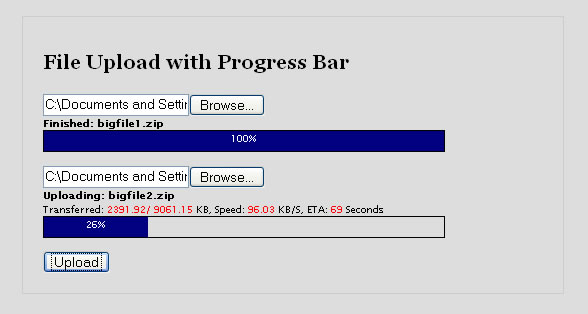
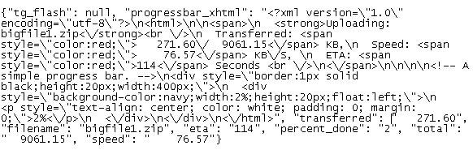

This document describes how to add a File Upload Progress Bar to a project using a CherryPy filter and some Javascript. The goal is that when a user submits a form, progress bars should appear below the file inputs.
Note that this is very different than an AJAX File Uploader, which will be the topic of another tutorial.
We are going to start by using tg-admin quickstart to start a project, and we’ll finish with a form that has two progress bars on it that looks like this screenshot:

Functional, but not the prettiest thing in the world - right? To use this in an application, you might want to take out the transfer stats and leave just a progress bar with a nice background image on the progress bar instead of that basic blue block.
Not to worry! We’re going to keep the html for the progress bar in a template so you can customize the look and feel of the progress bar for your application. We will be using the kid template engine for this tutorial, but the templates are very simple and easy to convert to any of the other template engines supported by TurboGears.
The Javascript described in this example is unobtrusive, meaning that if Javascript is not available the form will still act like a regular html form with regular file inputs that will upload files to the server, but of course without the progress bars. Writing unobtrusive Javascript takes a few more lines of code than usual, but I’ll be sure to comment it well so it’s easy to understand.
This tutorial should work on TurboGears 1.0 or 1.1. When TurboGears moves from CherryPy 2.2 to Pylons/Paste (around TurboGears 2.0), the CherryPy filter (UploadFilter) used in this solution will need to be rewritten as WSGI middleware.
The basic steps for this project are:
Type this at the command line to make your project skeleton:
$ tg-admin quickstart
Let’s call the project ‘filedrop’:
Enter project name: FileDrop
Enter package name [filedrop]:
...
Change to the directory created for you by tg-admin. From now on any path references during this tutorial will be relative to the project’s directory:
$ cd FileDrop/
At this point your project should be operational. Make sure this is the case by starting the built-in web server:
$ python start-filedrop.py
If everything worked, you should be able to browse to http://localhost:8080 and see the welcome message. If that’s the case, you can safely stop the server using your interrupt key (ctrl-c on most systems).
If it didn’t work, you should see some kind of error message at the command line. If you see a bunch of text, look at the last error listed and search for it on the TurboGears mailing list archives, and then on Google if you haven’t found an answer on the list archives. If all else fails (and only then!), go ahead and post to the TurboGears mailing list with as much information as you can get on the problem you’re having!
We need to create a template with a form that has two file input fields. Remember that file upload forms must use method=POST and enctype="multipart/form-data" in order to work properly. While we’re at it, let’s also stick a paragraph element in the template to hold any special messages our controllers might wish to send.
Create a file named uploadform.kid in the filedrop/templates/ directory like this:
<!DOCTYPE html PUBLIC "-//W3C//DTD XHTML 1.0 Transitional//EN" "http://www.w3.org/TR/xhtml1/DTD/xhtml1-transitional.dtd">
<html xmlns="http://www.w3.org/1999/xhtml" xmlns:py="http://purl.org/kid/ns#" py:extends="'master.kid'">
<head>
<title>Upload Your File Today!</title>
</head>
<body>
<style>input {display: block; margin-top: 1em;}</style>
<div style="width: 500px; margin: 2em auto; padding: 2em; border: 1px solid #ccc">
<h1>File Upload with Progress Bar</h1>
<p py:condition="defined(message)"
py:content="message"
style="font-size: 200%; color: orange;" />
<form action="upload_handler" method="POST" enctype="multipart/form-data">
<input type="file" name="myfile1" />
<input type="file" name="myfile2" />
<input type="submit" name="submit" value="Upload" />
</form>
</div>
</body>
</html>
Note that the form has its action attribute set to upload_handler. That’s a controller that we’ll create in step 4 to actually save the files, so you don’t have to worry about it just yet.
Of course, we do need to add a controller that will display this form, along with the optional message. Add this to the Root controller class of your filedrop/controllers.py file:
@expose(template="filedrop.templates.uploadform")
def upload(self, msg="", **kw):
""" Show upload form with an optional message """
return dict(message=msg)
Let’s make sure that worked. First start the built-in web server:
$ python start-filedrop.py
If you browse to http://localhost:8080/upload you should see the form we just added:
Problems? Check the Troubleshooting section. Otherwise go ahead and stop the server again using your interrupt key (ctrl-c on most systems).
tweekgeek (james at tweekedideas dot com) has written a CherryPy filter that manages http file uploads and maintains live upload statistics. Using this, we can make a JSON controller that tracks file uploads and returns file upload statistics to our Javascript. The UploadFilter code needs a modification however, to work for our purposes. By default UploadFilter deletes the statistics on a file as soon as the transfer is finished. We need to wait until all the files are transferred before deleting any of the statistics, so we need to change the code. Luckily the code is open source so we can do this!
Download the modified version of uploadfilter.py into your filedrop python directory (the one that has model.py in it), and turn on that filter for your project by editing your filedrop/controllers.py file and putting the following lines just before the class Root(...) declaration:
# Add the UploadFilter filter to cherrypy.
import cherrypy
cherrypy.filters.input_filters.append('filedrop.uploadfilter.UploadFilter')
cherrypy.filters.output_filters.append('filedrop.uploadfilter.UploadFilter')
Next we need to configure UploadFilter. Edit your filedrop/config/app.cfg file and add these lines anywhere in the [global] section:
# Configure UploadFilter
upload_filter.on = True
upload_filter.max_concurrent = 10 # Allow up to 10 concurrent uploads
upload_filter.max_size = 20000 # 20 meg limit per upload
upload_filter.timeout = 3600 # 1 hr. Excessive for most situations.
Note
If you want to allow really big file uploads (>= ~100 MB), then you also need to increase the maximum requst body size for the CherryPy server. Add the following setting to your dev.cfg/prod.cfg:
# Set max request body size, in bytes, to 500 Mib
server.max_request_body_size = 524288000
We should re-start the server now, to make sure there are no configuration problems or syntax errors. Go ahead and start the built-in web server:
$ python start-filedrop.py
If you still see the welcome screen at http://localhost:8080 then everything is OK, and you can stop the server now using the interrupt key (ctrl-c on most systems). If you get an error trying to start the server, check the Troubleshooting section.
When the form is submitted, we’ll need a controller ready to save those files. Not only that, but we have to add a few lines of custom code. Remember that our project is using a modified UploadFilter, one that doesn’t automatically delete file statistics as each transfer is done. That means that we have to write code that deletes the statistics from memory when all the files are done transferring. The logical place to do this is in the controller that handles the form when it is submitted. Of course this controller should also save the files somewhere, in our example we’ll just save them to a directory in our project. First we’ll make that directory:
mkdir tempfiles
And then we’ll need to edit the filedrop/controllers.py file and add a form handler to the Root controller:
@expose()
def upload_handler(self, myfile1, myfile2, **kw):
""" Do something with form values and re-show the upload form. """
# Tell UploadFilter that this transfer is done.
try:
del cherrypy.file_transfers[cherrypy.request.remote_addr][myfile1.filename]
del cherrypy.file_transfers[cherrypy.request.remote_addr][myfile2.filename]
except KeyError:
pass
# Save any files that were uploaded (ignoring empty form fields)
tmpdir = os.path.join(os.getcwd(), "tempfiles")
if len(myfile1.filename) > 0:
self.save_file(os.path.join(tmpdir, os.path.basename(myfile1.filename)), myfile1.file)
if len(myfile2.filename) > 0:
self.save_file(os.path.join(tmpdir, os.path.basename(myfile2.filename)), myfile2.file)
# Re-show the upload form, with a nice little message
return self.upload(msg="uploaded %s and %s" % (myfile1.filename, myfile2.filename))
def save_file(self, filepath, file):
""" Safely save a file to the location given by filepath """
chunk_size = 8192
# return if file is empty
if not file:
return
# create new file on file system
savedfile = open(filepath, "wb")
# save data to this new file in chunks
while True:
data = file.read(chunk_size)
if not data:
break
savedfile.write(data)
Also since we’re using the os library, we’ll need to import it at the top of our controllers.py file:
# We use the os library to construct file paths.
import os
Now’s a good time to test the file upload code. Go ahead and start the built-in web server:
$ python start-filedrop.py
If you browse to http://localhost:8080/upload and try uploading some files, they should appear in your tempfiles directory. If so, go ahead and stop the server now using the interrupt key (ctrl-c on most systems). If you get an error trying to start the server, or if the files don’t show up, check the Troubleshooting section.
UploadFilter gives us access to all sorts of statistics on active file transfers, including speed (in bytes/second), total file size (in bytes), and the amount (in bytes) that’s been transferred so far. Let’s make a JSON controller that our Javascript can call will return those statistics, but in kilobytes for easier readibility. Go ahead and open up the filedrop/controllers.py file and add this to the Root controller:
@expose(allow_json=True)
def get_upload_stats(self, filename, **kw):
""" Returns a dict containing stats on the active upload """
# Get stats from UploadFilter.
# Firefox has a quirky behavior where the POSTed filename contains the path info
# while the fileinput.value (accessed via javascript) does not contain the path info,
# so look for stats in both places.
stats = cherrypy.file_transfers[cherrypy.request.remote_addr].get(filename) or \
cherrypy.file_transfers[cherrypy.request.remote_addr].get(self.sanitize_filename(filename))
# Assert that UploadFilter is tracking something named filename.
if not stats:
# If there are no entries for our IP Address and Filename, then we have nothing.
turbogears.flash("No active file uploads. IP: %s, FILENAME: %s" % \
(cherrypy.request.remote_addr, filename))
return dict()
# If the file transfer is finished, the dict should show this, avoiding the
# odd results that UploadFilter will spit back after a transfer is complete.
if stats.transferred == True:
upload_stats_in_kb = dict(filename=filename, speed=1, total=stats.pre_sized, \
transferred=stats.pre_sized, eta=0, percent_done=100)
else:
# Convert stats to KBs and save in a new dict called upload_stats_in_kb
upload_stats_in_kb = {}
upload_stats_in_kb['filename'] = filename
upload_stats_in_kb['speed'] = '%9.2f' % (stats.speed / 1024.0) # kb/s
upload_stats_in_kb['total'] = '%9.2f' % (stats.pre_sized / 1024.0) # kb
upload_stats_in_kb['transferred'] = '%9.2f' % (stats.transferred / 1024.0) # kb
upload_stats_in_kb['eta'] = str(int(stats.eta)) # seconds to arrival
upload_stats_in_kb['percent_done'] = "%d" % int(stats.transferred * 100 / stats.pre_sized)
# Return results as a dict
return upload_stats_in_kb
def sanitize_filename(self, filename):
""" Removes any path info that might be inside filename, and returns results. """
import urllib
return urllib.unquote(filename).split("\\")[-1].split("/")[-1]
Also since we’re using turbogears.flash(), we’ll need to import turbogears at the top of our controllers.py file:
# We use turbogears.flash() in our get_upload_stats() controller
import turbogears
As promised, instead of merely returning a dictionary of data and leaving the display of the progress bar up to the Javascript, we’ll make a template that will take the statistics and display them along with the progress bar. This template is pretty self-explanatory, it just displays the filename, speed, percent_done, and other variables. Create a file named progressbar.kid in the filedrop/templates/ directory like this:
<html xmlns:py="http://purl.org/kid/ns#">
<span py:if="percent_done != 100">
<strong>Uploading: $filename</strong><br/>
Transferred: <span style="color:red;">$transferred/$total</span> KB,
Speed: <span style="color:red;">$speed</span> KB/S,
ETA: <span style="color:red;">$eta</span> Seconds <br/>
</span>
<span py:if="percent_done == 100">
<strong>Finished: $filename</strong>
</span>
<!-- A simple progress bar. -->
<div style="border:1px solid black;height:20px;width:400px;">
<div style="background-color:navy;width:${percent_done}%;height:20px;float:left;">
<p style="text-align: center; color: white; padding: 0; margin: 0;">${percent_done}%</p>
</div>
</div>
</html>
And now we’ll need our get_upload_stats controller to pass the statistics to this progressbar template and return the resulting xhtml to the Javascript that we’ll put in our form. The code for this involves importing the kid template engine, importing the progressbar template we just created, and feeding it our statistics to get the resulting xhtml (this is called ‘serializing’).
First let’s import kid and import our progressbar template. In your controller file, add these lines just before the class Root(...) declaration:
# We use the 'kid' template engine to format the progress bar
import kid
kid.enable_import()
from filedrop.templates import progressbar as progressbar_template
Next we’ll ‘serialize’ the template and return the xhtml along with the stats in our get_upload_stats method. In our filedrop/controllers.py file, add these lines just before the return statement at the end of the get_upload_stats method:
# Construct the html to display the stats visually
upload_stats_in_kb['progressbar_xhtml'] = progressbar_template.serialize(**upload_stats_in_kb)
Phew! That was a lot! Let’s go ahead and test this. Open up two browser windows. We’ll upload files in one browser and watch the statistics come back from our JSON controller in the other window. First we’ll need to start the build-in web server:
$ python start-filedrop.py
Next browse to http://localhost:8080/upload and try uploading some really really big files. Why big files? Because we want the process to go slowly so that we can poll the get_upload_stats JSON controller for the upload statistics, and make sure this piece of the puzzle is working OK. Don’t have a big file sitting around? You can just make many copies of an audio file or something in a folder, and then zip them up into a single big file. Don’t be afraid to make this file several hundred megabytes big!
So now we’re uploading files. Let’s say one of those files is called bigfile1.zip. While the file is uploading, use your other browser window to browse to http://localhost:8080/get_upload_stats?filename=bigfile1.zip
You should see a JSON response kind of like this:

See our statistics in there? Neat, huh? If you get a message saying “no active file uploads”, it’s likely that your upload has already finished and you should try again using bigger files.
If it worked ok, stop your server again using the interrupt key (ctrl-c on most systems). If you got an error, maybe your upload finished before you requested the statistics? Try again with bigger files. If you got an error starting the server, check the Troubleshooting section.
As expected, this project involves some javascript. First we’ll need to turn on MochiKit for the project. Edit filedrop/config/app.cfg and put this in the [global] section:
tg.include_widgets=[‘turbogears.mochikit’]
The Javascript will need to unobtrusively attach itself to any forms that have file inputs, manipulate the DOM to insert placeholders for the progress bars right below each file input, and add an onsubmit event handler for the forms that repeatedly makes JSON calls to our get_upload_stats controller, updating the progress bars with each call. I went ahead and wrote some robust Javascript code to do all this. Please read through the comments in the Javascript to get a good idea of what’s going on. It helps to read it in reverse order, as I had to create functions before they are used and thus the first thing that happens (attaching the form onsubmit events) is actually the last thing in the file.
Go ahead and download progressbar.js into the filedrop/static/javascript/ directory.
Finally of course you’ll want to update the form to use this javascript. Edit the filedrop/templates/uploadform.kid and add this to the ‘<head>’ section:
<script type="text/javascript" src="/static/javascript/progressbar.js"></script>
That’s it!
If everything worked, you should be able to start the server again without error:
$ python start-filedrop.py
Now browse to the upload form at http://localhost:8080/upload and try uploading some files! You should see the progress bars and upload statistics just like those in our original screenshot:
If it didn’t work, double-check steps 1 through 6, and check the Troubleshooting section of this document.
If you are using CherryPy >= 2.3.0, please make sure that you are using an up-to-date version of the uploadfilter.py file. The file should have a comment in the docstring at the top, saying that it has been adapted for CherryPy >= 2.3.0.
If you run into other problems, search the TurboGears mailing list for people that ran into similar problems. For example, you might search for “File Upload Progress Bar problems” and read what comes up.
If that doesn’t help, go ahead and send an email to the TurboGears mailing list and copy the author of this document – Ian Charnas, icc at case dot edu.
I’ll be adding content to the Troubleshooting section as soon as I start seeing problem reports and get an idea of what the basic problems are that people are having.
- Brian Beck for letting me steal step 1 from his ToDo List Tutorial
- Tweekgeek for releasing his UploadFilter to the world
- Kevin Dangoor and the many other fine programmers working on TurboGears.